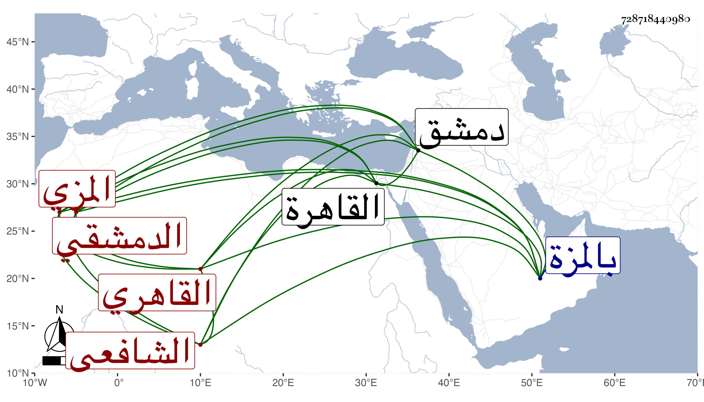

0902Sakhawi.DawLamic.ITO20230111-ara1.EIS1600.728718440980
Biography ID: 728718440980
342
محمد بن عثمان بن علي بن عثمان بن علي بن عثمان بن سعد بن أبي المعالي الشمس بن الفخر الدمشقي ثم المزي القاهري الشافعي ابن عم إبراهيم بن أحمد الماضي ويعرف بالرقي . ولد في سنة اثنتين وستين وسبعمائة بالمزة ونشأ بها فقرا القرآن وبعض التنبيه عند الشهاب العاملي من كفر عامل وقدم القاهرة وتنزل في صوفية البيبرسية ، وكان يذكر أنه سمع الصحيح على الحافظ ابن المحب ومحيي الدين الرحبي والشمس محمد بن السراج بدمشق وليس ببعيد سيما وقد كان خيرا نيرا حسن الشيبة مع السكون والانعزال ولذا أخبرته حين شهد ختم الصحيح بقراءتي بناء على غلبة الظن وأجاز وكتب بخطه ، وتعانى التجارة في الأشياء الظريفة كالملاليح والملاعق ونحوها لشدة دربته في ذلك وحوزه لكثير من آلات الصنائع التي لا توجد عند غيره وكذا كان يتكلم على أوقاف جامع المارداني نيابة وحمدت سيرته . مات قريب الخمسين ظنا .
